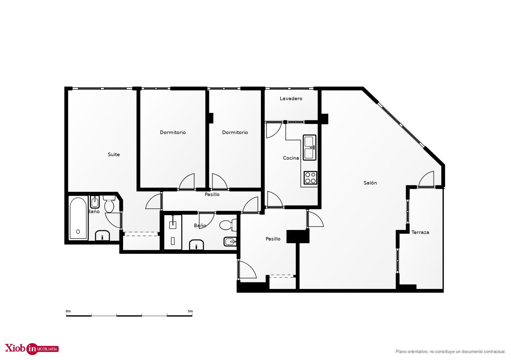

Что уже понятно по квартире
Угловая квартира «под ключ» (можно заезжать), с мебелью, газом, отоплением, кондиционерами, двойным остеклением, бронированной дверью, видеодомофоном, балконом/террасой у гостиной и галереей (lavadero) у кухни.
Сильные стороны
- Большая светлая гостиная с несколькими окнами и выходом на балкон.
- Три спальни + две ванные (одна с ванной, вторая с душевой кабиной).
- Отдельная кухня с выходом в прачечную-галерею (стиралка + газовый бойлер).
- Парковка в подземном гараже + кладовка внутри квартиры.
- Лифт, угловая планировка, район с магазинами, школами, автобусами.
На что смотреть при приёмке
- Состояние газового бойлера Junkers и труб на галерее.
- Шум с улицы при открытых окнах (вид на оживлённую улицу).
- Что именно входит в сделку из мебели/техники (сейчас квартира меблирована).
- Точные метры кладовки и место № 15 в гараже по escritura.
- Энергосертификат: класс E (125 кВт·ч/м²·год, 26 кг CO₂/м²·год).
Деньги, коммуналка, технические факты
| Полезная площадь | 89,81 м² |
|---|---|
| Общая / built | 114 м² |
| Этаж / этажность | 3 / 6, лифт |
| Ориентация | Северо-запад |
| Год постройки | 1984 |
| Состояние | Ready to move and live (можно жить сразу) |
| Кухня | Отдельная, оборудованная |
| Отопление | Природный газ |
| ГВС | Городской газ (бойлер на галерее) |
| Климат | Кондиционеры + тепловой насос cold/heat |
| Окна | Climalit / двойное остекление, жалюзи (persianas) |
| Полы | Терраццо (везде в жилых зонах) |
| Фасад | Окрашенный |
| Comunidad | 150 € / квартал ≈ 50 €/мес |
| IBI (налог на недвижимость) | 430 € / год |
| Энергокласс | E · 125 кВт·ч/м²·год · 26 кг CO₂/м²·год |
| Парковка | 1 место в гараже (на фото — № 15) |
| Дополнительно | Балкон, галерея, кладовка, встроенные шкафы, мебель, бронированная дверь, видеодомофон, PMR |
Грубая оценка владения (ежемесячно, ориентир)
- Comunidad ≈ 50 €
- IBI ≈ 36 € (430 / 12)
- Газ + свет + вода — отдельно, зависят от потребления; газ есть в доме.
- Ипотека / нотариус / налоги покупки — считать отдельно по вашему режиму (резидент / нерезидент).
План квартиры
Ориентировочный план агентства (не договорной документ). Слева блок спален и suite с ванной, по центру коридор и вторая ванная, справа кухня + lavadero и большой salón с террасой.

- Suite — большая спальня с собственной ванной (ванна).
- Dormitorio 1 и 2 — две отдельные спальни.
- Baño в коридоре — душевая кабина, общая.
- Cocina + Lavadero — кухня и прачечная-галерея.
- Salón + Terraza — гостиная/столовая и длинный балкон.
Гостиная и балкон
Главное пространство квартиры: терраццо, несколько окон, тёмная мебельная стенка, обеденная зона, выход на длинный узкий балкон с видом на улицу и круглый дом напротив. На балконе стоят два внешних блока Fujitsu.
Кухня и галерея (lavadero)
Отдельная кухня с деревянной мебелью «как есть», варочной панелью, посудомойкой, холодильником, столом на двоих и выходом в светлую галерею: стиралка AEG, мойка, газовый бойлер. Фото 12 — ИИ-версия «после ремонта», рядом реальные кадры.
Спальни
Три спальни. Одна выглядит как основная (кровать + комод + шкаф), вторая — более узкая с встроенным шкафом над кроватью (хороший кандидат в кабинет/гостевую), третья — с большим шкафом у окна (можно сделать гардеробную или детскую).
Спальня A — более просторная / «родительская»
Спальня B — узкая, со встроенным шкафом
Спальня C — шкаф почти во всю стену
Ванные комнаты
Две ванные: одна классическая с ванной и биде (типичный «испанский» санузел 80–90-х), вторая обновлённее — душевая кабина walk-in, деревянный пол-ламинат, поручни (удобно для PMR).
Коридор, прихожая, кладовка
Классический испанский pasillo с тёмными дверями и встроенными шкафами, зеркальная стена в прихожей (визуально расширяет), отдельная кладовка со стеллажами.
Парковка
Подземный гараж. На фото чётко видно место № 15 (чёрный Golf), рядом 14 и 16. При подписании сверь номер места в договоре и escritura.
Три сценария «что делать после ключей»
1. Заехать и жить (0–3 000 €)
- Глубокая уборка, смена замков по желанию, базовый текстиль.
- Выкинуть/отдать лишнюю мебель продавца, оставить шкафы и кровати на первое время.
- Проверить бойлер, кондиционеры, посудомойку, стиралку.
2. Косметика «под себя» (примерно 8–20 тыс. €)
- Покраска стен (снять/сгладить gotelé в ключевых комнатах).
- Кухня: фасады/столешница или компактная новая кухня.
- Освещение, розетки, новые шторы, одна ванная косметически.
- Полы: оставить терраццо или постелить ламинат в спальнях/гостиной.
3. Более серьёзный апгрейд (20 тыс. €+)
- Полная кухня + обновление lavadero (короб труб, сушилка).
- Две ванные «с нуля», возможно тёплый пол в санузлах.
- Перестановка мебели под ваш сценарий (офис / ребёнок / аренда).
- Если цель — сдача: меблировка «под Airbnb/larga temporada» и фотосессия.
Все 40 фото подряд
Нажми любое — полноразмерный просмотр, стрелки листают, Esc закрывает.